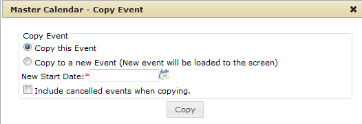

Tip:To select all event dates on the currently opened page for deletion in a single step, select the blank checkbox next to Actions.
If you have multiple pages of event dates to cancel, you must repeat this entire process on each page.
If you want to duplicate an event to another date, or if a new event contains the same information as a previously existing event, you do not have to enter all the event information “from scratch.” Instead, you can use the Copy Event function to copy an existing event.
Copy Event dialog box
| Tip:To select all event dates on the currently opened page for deletion in a single step, select the blank checkbox next to Actions. |
